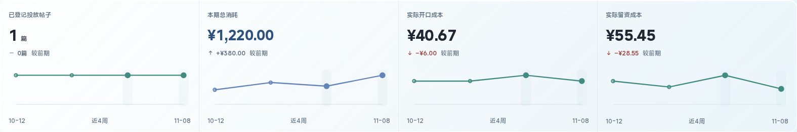
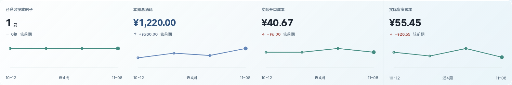

<!doctype html><html lang="zh-CN"><meta charset="utf-8"><meta name="viewport" content="width=device-width"><title>周会折线修复 · 前后对比</title><style>body{margin:0;color:#152b39;background:#edf3f6;font:15px/1.6 system-ui,sans-serif}header{padding:18px 24px;background:#fff;border-bottom:1px solid #cbd7df}h1{font-size:24px;margin:0}p{margin:6px 0}main{margin:20px 24px}figure{margin:20px 0}figcaption{font-weight:600;margin:8px 0}img{display:block;width:100%;height:auto;background:white;border:1px solid #d0dce5;border-radius:12px;box-sizing:border-box}a{color:#2459c6}video{max-width:100%;width:1440px;display:block;margin:16px auto}summary{cursor:pointer;font-weight:600}</style><header><h1>周会折线修复 · 前后对比</h1><p>已发布，已自检 · 隔离样例 · 运行源码 5aba905</p><a href="README.md">验证记录</a>　<a href="print-page.png" target="_blank">周会打印效果</a></header><main><figure><figcaption>修复前：两个点被同时强调，出现竖向底纹　<a href="before-page-1920.png" target="_blank">查看整页</a></figcaption><a href="before-detail.png" target="_blank"></a></figure><figure><figcaption>修复后：只保留末有效实心点，去掉底纹　<a href="after-page-1920.png" target="_blank">查看整页</a></figcaption><a href="after-detail.png" target="_blank"></a></figure><details><summary>查看真实入场短录屏</summary><video controls preload="none" src="entry.webm"></video></details><p><a href="unknown-tail.png" target="_blank">末尾未知与真实零值样例</a></p></main></html>